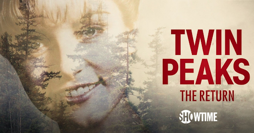

The televsion show Twin Peaks first aired on ABC on April 8, 1990. Created by Mark Frost and David Lynch, Twin Peaks has acrued something of a cult following in the decades following its original release.
After the first two seasons, the show was cancled in 1991. However, in 1992, Lynch wrote and directed the film Twin Peaks: Fire Walk With Me, which served as a prequel to the televsion show. Notably, the fan-favorite character Donna Hayward was recast for this film.
Finally, in 2017, the show made its big return on Showtime with a third season called Twin Peaks: The Return. This season is set 25 years after the events of season one, and it featured 18 episodes.
